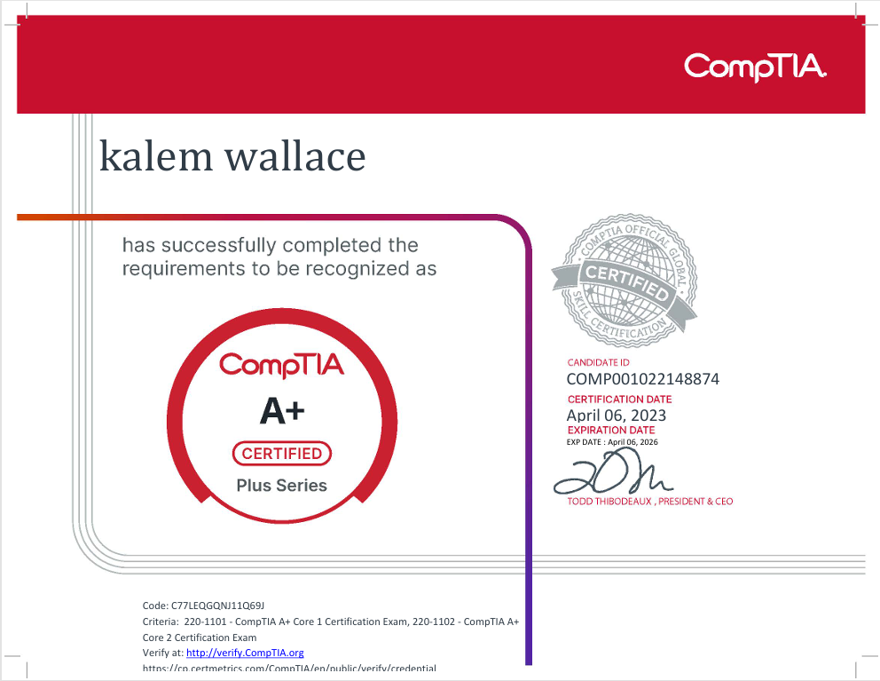
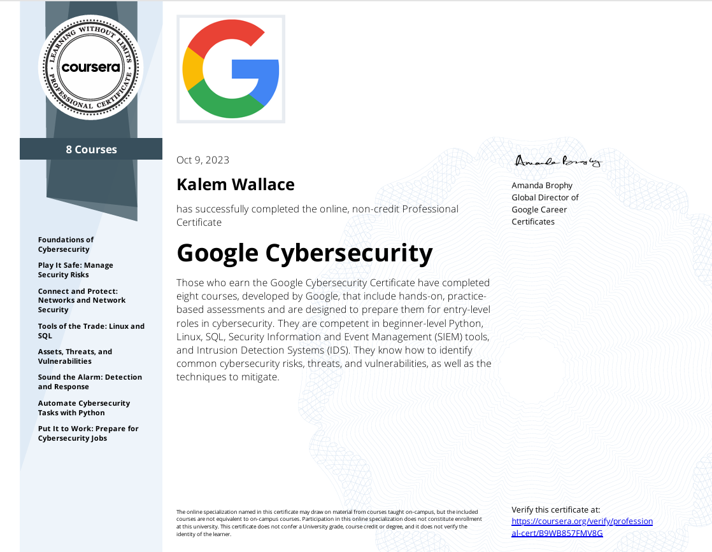
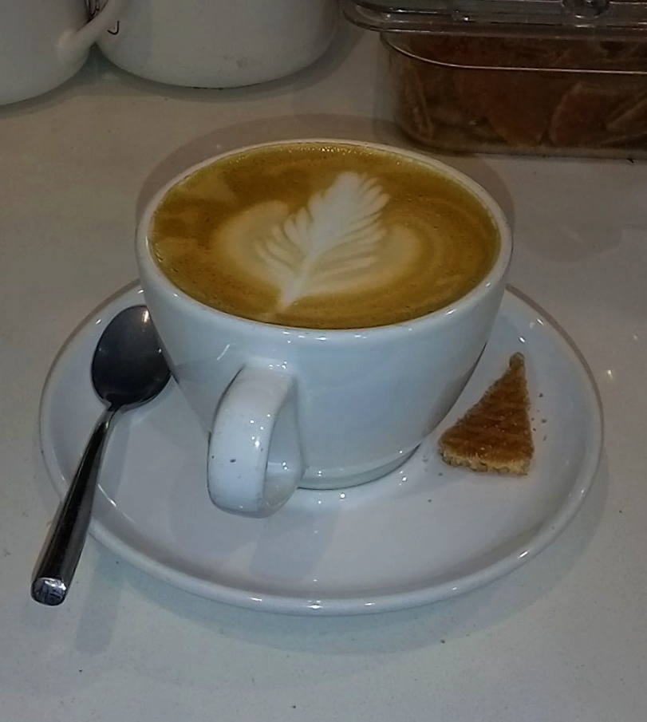
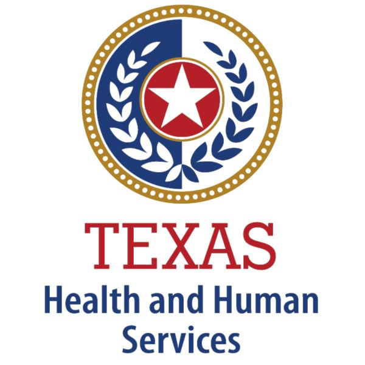

I'm Kalem — artist, skater, IT person, Austin TX. This site is both a gallery and a portfolio.
I've been in IT support for about a year — most recently at TxHHSC on a big IAM migration, OKTA, MFA, 40+ systems. Working toward cloud and identity management roles.
Stack: FastAPI, Node.js, PostgreSQL, Docker, Python, Active Directory, Azure AD, OKTA, SCCM, Git.
Mixed media mostly — collage, watercolor, oil pastel, acrylic, whatever ends up in the same piece. Cats and faces tend to come up a lot. Honestly I just go at the page until something starts coming out of it.
63 pieces in the gallery right now, I add to it pretty regularly. Take a look.
Skating for about twelve years — still going. Into music. I run local AI models on my own hardware (Ollama, LM Studio). I tend to want to know how things actually work, which is probably why I ended up in IT.
Working toward cloud and identity management. Helpdesk background, certs in progress — this site's portfolio project is part of building that out. It's a full-stack app I'm progressively securing with OAuth, SIEM logging, and Azure deployment.
Technical SupportTroubleshooting hardware/software issues. Remote support & ticket resolution (Tier 1 & 2). Microsoft 365 Suite (Outlook, OneDrive, Teams). Softphone & VoIP support (Cisco Webex, Avaya, Genesys). User onboarding/offboarding & documentation. Cross-platform experience (Windows 7–11, Ubuntu, Arch). Ticketing systems: BMC Helix, Remedy, Jira. Tools: Active Directory, OKTA, SCCM, MobileIron, Azure AD, BMC Helix, Remedy, Jira, CMD, Windows Settings, General "Google-Fu". |
Systems AdministrationUser and group management (AD, OKTA, Azure AD). Group Policy management & access provisioning. System imaging, and updates. Software deployment via SCCM. Mobile Admin tools such as MobileIron. Exposure to containerization (Docker). Monitoring system performance & logs (Event Viewer, Task Manager). Tools: Active Directory, Azure AD, OKTA, Group Policy, SCCM, MobileIron, Docker, Event Viewer. |
Development & AutomationWriting basic scripts in Python, Bash, PowerShell. REST API testing and integration. Version control with Git & GitHub. Frontend familiarity: HTML, CSS, React Native. Database basics: MongoDB (CRUD, local dev). Dev environment setup (Node.js, VS Code, Docker). Basic networking and CLI-based workflows. Tech: Python, Bash, Git, VS Code, React Native, Node.js, MongoDB, Docker, Postman. |



